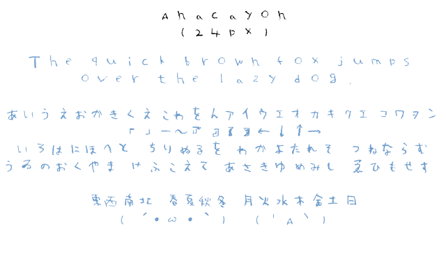

<div class="center">
  <h1>概要</h1>
  クレヨンで手書きで書いた文字をそのままフォントにしたものです。名前はAnacrayonです。<br />
  制作過程は<a href="http://tasuten.hatenablog.com/entry/20101025/1287938598">ちょっとクレヨンでフォント作ってみた</a>というタイトルでブログに大昔に書きました。

  <h1>ライセンス</h1>
  <a href="http://www.kmonos.net/nysl/">NYSL</a>

  <h1>ダウンロード</h1>
  <a href="anacrayon.ttf">こちら</a>

  <h1>収録文字</h1>
  <ul>
    <li>半角英数字・記号</li>
    <li>全角記号の一部</li>
    <li>全角ひらがな・カタカナ</li>
    <li>概ね小学校1年生及び2年生で習う漢字240字</li>
    <li>その他漢字及び一部ギリシャ文字19字</li>
  </ul>

  <h1>使用上の注意</h1>
  スキャンしてほとんど加工せず適当に作ったので、クレヨンっぽく見えるのはフォントサイズ30前後までっぽい
</div>

